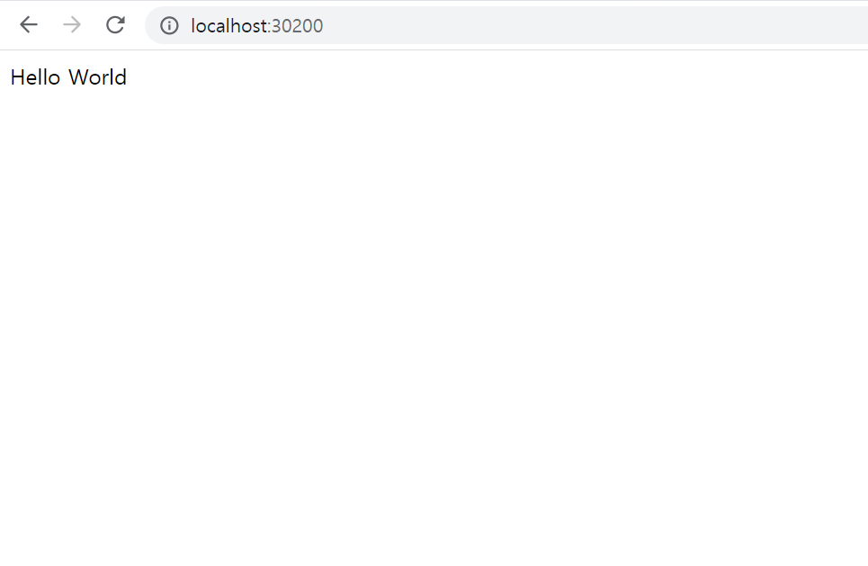

[테스트] 스프링부트 웹소스 파드화
springboot 샘플 웹페이지 작성
springboot기반 localhost:8080 접속시 helloworld 뿌려주는, 간단한 웹 프로그램을 작성해본다.
maven 빌드 및 jar파일 생성
maven build를 이용하여, jar 파일을 빌드, 생성한다.
mvn clean
mvn packagedockerfile 빌드 및 실행, push
cat > dockerfile
FROM openjdk:8-jdk-alpine
ARG JAR_FILE=target/*.jar
COPY ${JAR_FILE} webdemo.jar
ENTRYPOINT ["java","-jar","/webdemo.jar"]
#빌드
docker build -t bluedove97/webdemo-test:v0.0.1 .
#도커 실행
docker run -d -p 8080:8080 --name webdemo bluedove97/webdemo-test:v0.0.1
#확인
curl localhost:8080
#도커 중지
docker rm -f webdemo
#도커 푸시
docker push bluedove97/webdemo-test:v0.0.1Deployment로 pod화
cat > deploy-webdemo.yaml
apiVersion: apps/v1
kind: Deployment
metadata:
name: webdemo
spec:
replicas: 3
selector:
matchLabels:
app: webdemo
template:
metadata:
name: webdemo-test
labels:
app: webdemo
spec:
containers:
- name: webdemo-container
image: bluedove97/webdemo-test:v0.0.1
ports:
- containerPort: 8080
resources:
requests:
cpu: 200mNodePort Service 붙이기
cat > svc-webdemo.yaml
apiVersion: v1
kind: Service
metadata:
name: svc-webdemo
spec:
type: NodePort
clusterIP: 10.100.100.200
selector:
app: webdemo
ports:
- protocol: TCP
port: 80
targetPort: 8080
nodePort: 30200테스트 - 내부 연결 테스트
#테스트1
kubectl get all -o wide
NAME READY STATUS RESTARTS AGE IP NODE NOMINATED NODE READINESS GATES
pod/webdemo-95c66c87-262mr 1/1 Running 0 3m45s 10.44.0.2 node1.example.com <none> <none>
pod/webdemo-95c66c87-c22mw 1/1 Running 0 3m45s 10.44.0.1 node1.example.com <none> <none>
pod/webdemo-95c66c87-nld22 1/1 Running 0 3m45s 10.36.0.2 node2.example.com <none> <none>
NAME TYPE CLUSTER-IP EXTERNAL-IP PORT(S) AGE SELECTOR
service/kubernetes ClusterIP 10.96.0.1 <none> 443/TCP 6d14h <none>
service/svc-webdemo NodePort 10.100.100.200 <none> 80:30200/TCP 3m45s app=webdemo
NAME READY UP-TO-DATE AVAILABLE AGE CONTAINERS IMAGES SELECTOR
deployment.apps/webdemo 3/3 3 3 3m46s webdemo-container bluedove97/webdemo-test:v0.0.1 app=webdemo
NAME DESIRED CURRENT READY AGE CONTAINERS IMAGES SELECTOR
replicaset.apps/webdemo-95c66c87 3 3 3 3m46s webdemo-container bluedove97/webdemo-test:v0.0.1 app=webdemo,pod-template-hash=95c66c87
curl 10.36.0.2:8080 #<--- 성공
curl 10.100.100.200 #<--- 성공
curl 10.100.100.200/test #<--- 성공테스트 - 외부 연결 테스트
virtualbox의 port forwarding을 node1으로 가는 30100, 30200포트 세팅후
바깥의 웹브라우저에서 http://localhost:30200 실행
{kind=link}

성공!